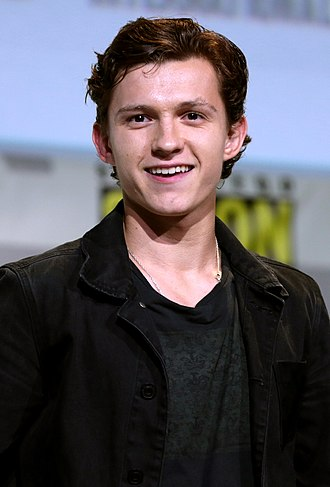

Tony Stark
Steve Rogers
Thor Odinson
Peter Parker
T Challa
Wanda Maximoff
Carol
Nick fury
Natasha
Dr.Strange
1.Tony Stark

Robert John Downey Jr
Born April 4, 1965 (age 58)
New York City, U.S.
Education Santa Monica High School
Occupations Actorproducer
Years active 1970–present
Works Filmography
Spouses Deborah Falconer(m. 1992; div. 2004)
Susan Levin (m. 2005)
Partner Sarah Jessica Parker (1984–1991)
Children 3
Parent Robert Downey Sr. (father)
2.Steve Rogers

Chris Evans
Born June 13, 1981 (age 42)
Boston, Massachusetts, U.S.
Occupation Actor
Years active 1997–present
Relatives Scott Evans (brother)
Mike Capuano (uncle)
3.Thor Odinson
Chris Hemsworth
Born 11 August 1983 (age 39)
Melbourne, Victoria, Australia
Education Heathmont College
Occupations Actor,producer
Years active 2002–present
Spouse Elsa Pataky (m. 2010)
Children 3
Relatives Luke Hemsworth (brother)
Liam Hemsworth (brother)
Joanne van Os (aunt)
4.Peter Parker

Tom Holland
Born 1 June 1996 (age 27)
London, England
Education BRIT School
Occupation Actor
Years active 2006–present
Parent Dominic Holland (father)
5.T Challa
Chadwick Boseman
Born November 29, 1976[a]
Anderson, South Carolina, U.S.
Died August 28, 2020 (aged 43)
Los Angeles, California, U.S.
Cause of death Colon cancer
Resting place Forest Lawn Memorial Cemetery, Anderson, Anderson County, South Carolina, U.S.
Alma mater Howard University (BFA)
Occupations Actorplaywright
Years active 1993–2020
Spouse Taylor Ledward
6.Wanda Maximoff
Elizabeth Olsen
Born February 16, 1989 (age 34)
Sherman Oaks, California, U.S.
Alma mater New York University
Occupation Actress
Years active 1994–present
Spouse Robbie Arnett
Relatives Mary-Kate Olsen (sister)
Ashley Olsen (sister)
7.Carol
Brie Larson
Born October 1, 1989 (age 33)
Sacramento, California, U.S.
Citizenship United StatesCanada
Occupations Actressfilmmaker
Years active 1998–present
Partner Alex Greenwald (2013–2019)
8.Nick fury
Samuel L. Jackson
Born December 21, 1948 (age 74)
Washington, D.C., U.S.
Citizenship united StatesGabon
Education Morehouse College (BA)
Occupations Actorproducer
Years active 1972–present
Spouse Latanya Richardson
(m. 1980)
Children 1
9.Natasha
Scarlett Johansson
Born November 22, 1984 (age 38)
New York City, U.S.
Citizenship United StatesDenmark
Education Professional Children's School
Occupation Actress
Years active 1994–present
Works Performancesdiscography
Spouses Ryan Reynolds
(m. 2008; div. 2011)
Romain Dauriac (m. 2014; div. 2017)
Colin Jost (m. 2020)
Children 2
Relatives Ejner Johansson (grandfather)
10.Dr.Strange

Benedict Cumberbatch
Born 19 July 1976 (age 46)
Hammersmith, London, England
Nationality British
Alma mater University of ManchesterLondon Academy of Music and Dramatic Art
Occupation Actor
Years active 1998–present
Spouse Sophie Hunter (m. 2015)
Children 3
Parents Timothy Carlton (father)
Wanda Ventham (mother)